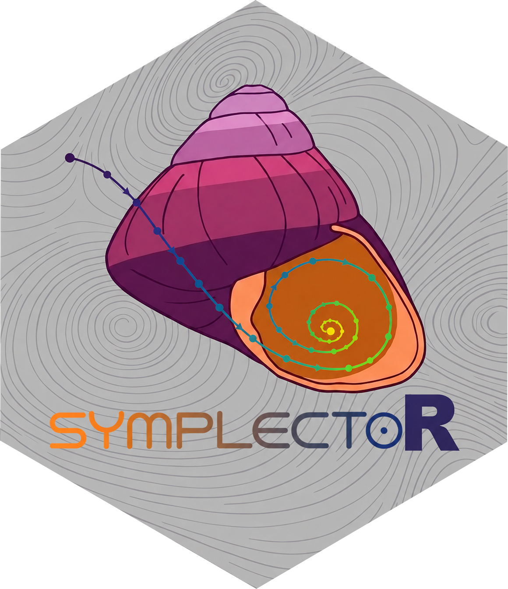

Canonical benchmark objectives with known ground truth
Source:R/sym_benchmark.R
sym_benchmark.RdGenerates seeded benchmark problems whose minimizers, minimum values and, where available, analytic continuous-time trajectories are known exactly. Every quantitative claim made by the package is validated against these generators; they are also the recommended starting point for exploring the solvers.
Usage
sym_benchmark(
name = c("quadratic", "rosenbrock", "damped_oscillator", "nesterov_bessel"),
d = 2L,
kappa = 100,
seed = 123,
...
)Arguments
- name
Benchmark name.
"quadratic"builds a symmetric positive definite quadratic with prescribed condition number;"rosenbrock"the d-dimensional Rosenbrock valley;"damped_oscillator"the one-dimensional harmonic potential whose constant-damping trajectory has a closed form;"nesterov_bessel"the one-dimensional harmonic potential whose Nesterov-damped trajectory is a Bessel-function combination. Additional names from the non-smooth global-optimization suite are documented insym_benchmark_suite().- d
Problem dimension where applicable (ignored by the one-dimensional generators).
- kappa
Condition number of the quadratic (largest over smallest eigenvalue of the Hessian).
- seed
Seed controlling the random rotation of the quadratic Hessian.
- ...
Generator-specific overrides:
q0(initial position of the oscillator traces, default 10),gamma_damp(damping constant of the analytic traces, defaults 0.2 constant and 3 Nesterov).
Value
An object of class sym_benchmark: a list with fields f, grad
(analytic), dim, x_star, f_star, lower, upper, convex,
smooth, name, meta (generator parameters) and, for the oscillator
benchmarks, analytic, a function of time returning the exact
continuous-time position.
Details
The quadratic is \(f(x) = \tfrac12 (x - x^*)^\top Q (x - x^*)\) with \(Q = V \Lambda V^\top\), eigenvalues log-spaced on \([1, \kappa]\) and \(V\) a seeded random rotation; \(x^* = (1, \ldots, 1)\). The damped oscillator benchmark carries the exact solution of \(\ddot q + \gamma \dot q + q = 0\), \(q(0) = q_0\), \(\dot q(0) = 0\), namely \(q(t) = q_0 e^{-\gamma t / 2} (\cos(\omega t / 2) + (\gamma / \omega) \sin(\omega t / 2))\) with \(\omega = \sqrt{4 - \gamma^2}\). The Nesterov-damping benchmark carries the exact solution of \(\ddot q + \tfrac{\gamma}{t + 1} \dot q + q = 0\) expressed through Bessel functions of order \((\gamma \pm 1)/2\); both traces are the reference solutions used by Franca, Jordan and Vidal (2021) to verify integrator error orders.
References
Franca, G., Jordan, M. I., & Vidal, R. (2021). On dissipative symplectic integration with applications to gradient-based optimization. Journal of Statistical Mechanics: Theory and Experiment, 2021(4), 043402. doi:10.1088/1742-5468/abf5d4
Rosenbrock, H. H. (1960). An automatic method for finding the greatest or least value of a function. The Computer Journal, 3(3), 175-184. doi:10.1093/comjnl/3.3.175